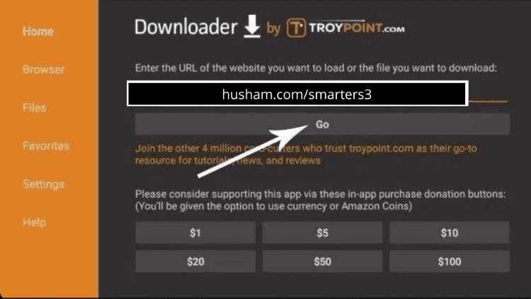

Installationsanleitung
In wenigen Minuten einsatzbereit. Folgen Sie unseren Premium-Schritt-für-Schritt-Anleitungen, um Plex Plus auf jedem Gerät einzurichten.
Fire TV Stick / Amazon Firestick
Downloader-App installieren
Gehen Sie zum Startbildschirm Ihres Geräts, wählen Sie Suchen und geben Sie "Downloader" ein. Wählen Sie die App aus und klicken Sie auf Herunterladen/Erhalten.

Unbekannte Quellen aktivieren
Gehen Sie zu Einstellungen > Mein Fire TV > Entwickleroptionen. Aktivieren Sie "Unbekannte Apps installieren" und stellen Sie es für die Downloader-App auf AN.
IPTV Smarters herunterladen
Starten Sie Downloader und geben Sie die folgende URL ein: https://www.iptvsmarters.com/smarters.apk. Klicken Sie auf Los und dann auf Installieren, wenn Sie dazu aufgefordert werden.
Anmelden und Streamen
Öffnen Sie IPTV Smarters Pro, wählen Sie "Login with Xtream Codes API" und geben Sie den Benutzernamen, das Passwort und die URL ein, die an Ihre E-Mail gesendet wurden.
Android & iOS (Mobil/Tablet)
App herunterladen
Suchen Sie im Google Play Store oder App Store nach "IPTV Smarters Pro" (Android) oder "Smarters Player Lite" (iOS).
Xtream-API auswählen
Öffnen Sie die App und wählen Sie die Option "Login with Xtream Codes API".

Daten eingeben
Geben Sie Ihre Abonnementdaten ein. Nachdem Sie auf "ADD USER" geklickt haben, warten Sie einen Moment, bis der Inhalt synchronisiert wurde.

Smart TV (Samsung & LG)
Content Store öffnen
Gehen Sie zum Samsung Smart Hub oder LG Content Store und suchen Sie nach "IPTV Smarters Pro".
Installieren und Ausführen
Nach der Installation öffnen Sie die Anwendung und wählen "Login with Xtream Codes API".
Anmeldung
Geben Sie die nach dem Kauf erhaltenen Zugangsdaten ein, um Live-TV in 4K zu genießen.
Windows PC / Laptop
Windows-App herunterladen
Laden Sie die offizielle IPTV Smarters Pro ausführbare Datei für Windows aus unserem Ressourcenzentrum herunter.
Installation
Führen Sie das Installationsprogramm aus und starten Sie die App von Ihrem Desktop. Wählen Sie Xtream Codes API Login.
Abonnement hinzufügen
Geben Sie Ihren eindeutigen Benutzernamen und Ihr Passwort ein. Klicken Sie auf "Add User", um sofort mit dem Fernsehen zu beginnen.
KODI Einrichtung (PVR IPTV Simple Client)
Zu TV-Optionen navigieren
Starten Sie Kodi und wählen Sie "TV" aus dem linken Menü.
PVR Client installieren
Wählen Sie "Enter Add-on Browser" und suchen Sie "PVR IPTV Simple Client" in der Liste.
M3U-URL konfigurieren
Klicken Sie auf "Konfigurieren", gehen Sie zur Registerkarte Allgemein und fügen Sie die M3U-URL ein, die wir an Ihre E-Mail gesendet haben.
Laden und Abspielen
Warten Sie, bis die Kanäle geladen sind. Sie können jetzt direkt über das Kodi-Hauptmenü auf alle Premium-Inhalte zugreifen.
MAG-Box (250, 254, 256 usw.)
Systemeinstellungen aufrufen
Gehen Sie zu Einstellungen > Systemeinstellungen > Server > Portale.

Portal-Details festlegen
Geben Sie "Plex Plus" als Portalnamen ein und fügen Sie die in Ihrer E-Mail angegebene Portal-URL ein.

Neustart und Verbinden
Klicken Sie auf OK zum Speichern und starten Sie Ihr Gerät neu. Ihre MAC-Adresse muss uns zur Aktivierung mitgeteilt werden.